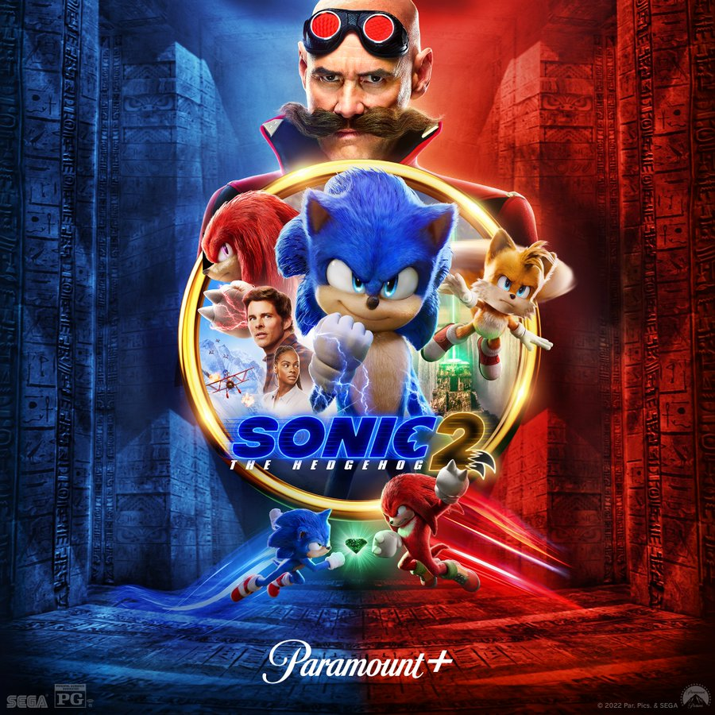

Homem-aranha |
Sonic 2 |
Doutor-estranho
Sonic 2 - O filme

Sinopse
Sonic 2 - O Filme é uma sequência dos acontecimentos do primeiro live-action de Sonic - O Filme, baseado no videogame de sucesso. Após conseguir se estabelecer em Green Hills, Sonic está pronto para mais liberdade e quer provar que tem o necessário para ser um herói de verdade. Seu teste virá quando Tom e Maddie concordam em deixá-lo em casa enquanto saem de férias para ir ao casamento da irmã de Rachel, no Havaí. Mas para a infelicidade do ouriço, a data acaba coincidindo com o retorno do Dr. Robotnik, dessa vez com um novo parceiro, Knuckles, depois que o doutor do mal vai embora para o planeta cogumelo. O terrível Robotnik está à procura de uma esmeralda com o poder de destruir civilizações. Sonic se une a um novo companheiro, Tails, e juntos eles embarcam em uma jornada para encontrar a esmeralda antes que ela caia nas mãos erradas.
Trailer